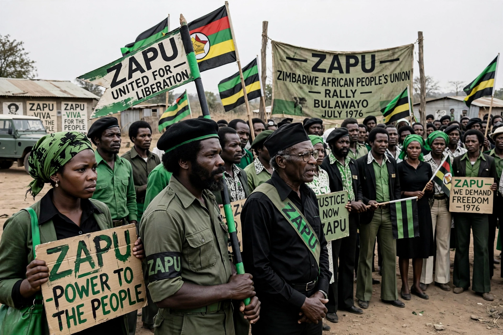

| Abbreviation | ZAPU |
|---|---|
| Leader | Joshua Nkomo (1961–1987) |
| Founded | 17 December 1961 |
| Dissolved | 1987 (original); revived 2008 |
| Split from | National Democratic Party |
| Headquarters | Bulawayo, Zimbabwe |
| Armed wing | ZIPRA |
| Ideology | African nationalism; socialism |
The Zimbabwe African People's Union (ZAPU) is a Zimbabwean political party. Founded in December 1961 by Joshua Nkomo after his National Democratic Party was banned by the Southern Rhodesian government, ZAPU became one of the two principal movements in the Rhodesian Bush War against the white minority government of Ian Smith.
ZAPU was formed on 17 December 1961, ten days after the banning of the National Democratic Party. In September 1962, the Rhodesian government banned ZAPU itself, and its leaders were detained. The party nevertheless continued to operate underground and from exile, establishing external headquarters in Lusaka, Zambia.
In 1963, discontent over Nkomo's leadership strategy led to a split: Ndabaningi Sithole and others broke away to form the Zimbabwe African National Union (ZANU). The rivalry between the two movements persisted throughout the liberation struggle.
ZAPU's military wing, the Zimbabwe People's Revolutionary Army (ZIPRA), was trained and equipped largely by the Soviet Union and its allies, while ZANU's ZANLA received support from China. ZIPRA developed comparatively conventional forces, including armour and artillery, whereas ZANLA relied more heavily on guerrilla infiltration from Mozambique. During the war, ZIPRA forces claimed responsibility for shooting down two Air Rhodesia Viscount aircraft in 1978 and 1979, incidents that caused heavy civilian loss of life.
Following the Lancaster House Agreement, ZAPU contested Zimbabwe's first elections in 1980, winning 20 seats concentrated in Matabeleland, while Robert Mugabe's ZANU won a majority. Tension between the parties culminated in the Gukurahundi campaign of the 1980s, during which government forces killed thousands of civilians in ZAPU-supporting regions. In 1987 the two parties signed the Unity Accord, and ZAPU merged into the ruling party, thereafter known as ZANU–PF.
In 2008, former ZAPU members withdrew from ZANU–PF and revived the party, with Dumiso Dabengwa as its leader. The revived ZAPU has remained a minor party in Zimbabwean politics.